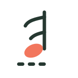

IMSLP · Petrucci Music Library
A large catalogue of classical scores, including many public-domain piano works and historical editions.

Explore public-domain and openly licensed piano scores from established music libraries. Search by composer, title, or style, then open the source to view or download available scores.
Enter a composer or piece above to search across these collections.
A large catalogue of classical scores, including many public-domain piano works and historical editions.
Sheet music based on public-domain editions, with downloadable scores and source files for many pieces.
Community projects that turn public-domain classical music into interactive, editable scores.
Browse freely licensed and public-domain scans. Check the licence and source notes on each file page.
Digitised historical music books and scores; item-level rights and access conditions differ.
Free-to-access older publications, including some music collections and piano methods.
Open-source libraries aren't organised to match the current Trinity syllabus, and not every free piece is suitable for a specific grade. Use these collections to explore repertoire, then compare difficulty and requirements with your teacher or the official syllabus.